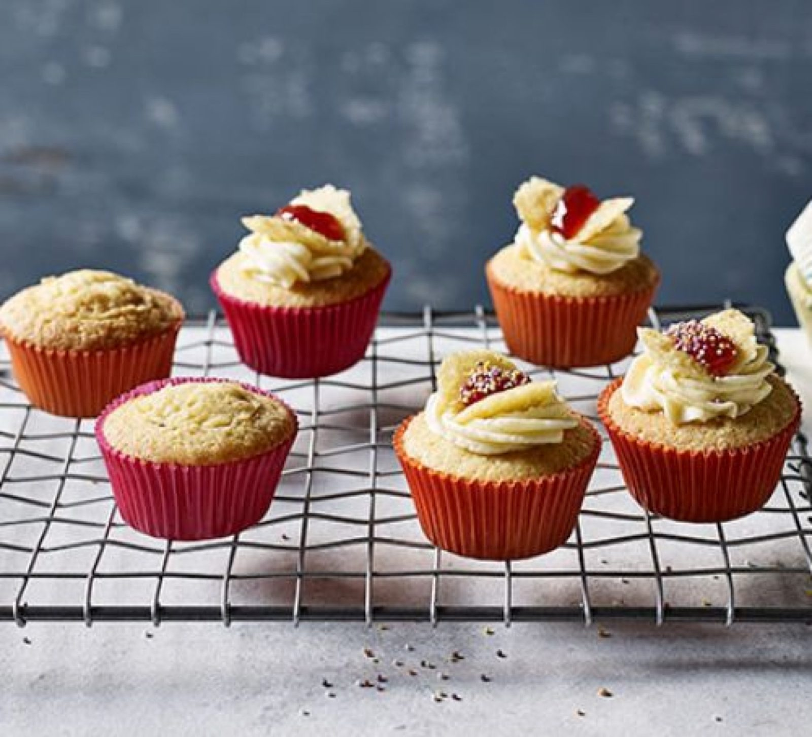

Butterfly Cakes

Before you start heat the oven to 180°C.
Ingredients
Method
- Cream the 85g butter and 85g sugar together.
- Beat in the 1 egg.
- Sift the 120g flour and the 1 small tsp baking powder together and fold into the creamed mixture.
- Divide the mixture evenly into small paper cases.
- Bake at 180°C for 18-20 mins.
- Form butterflies with the butter cream.